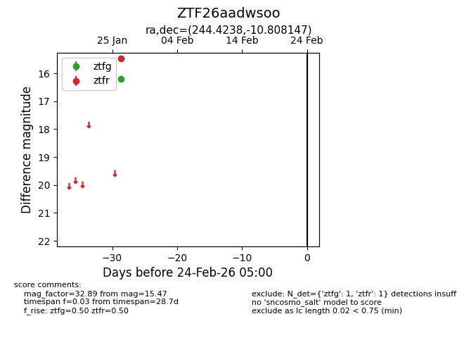
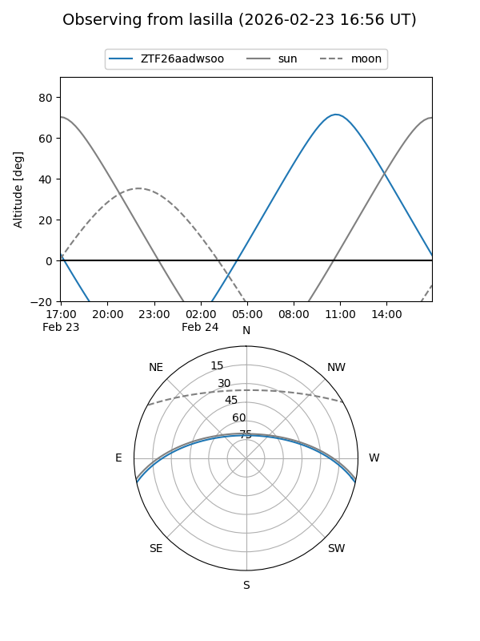
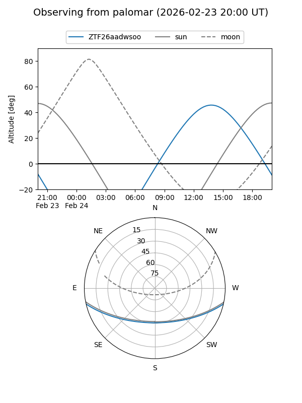

ZTF26aadwsoo
Target ZTF26aadwsoo at 2026-01-28 14:21
Aliases and brokers:
FINK: link
Lasair: link
ALeRCE: link
alt names
ZTF26aadwsoo (ztf,fink_ztf)
Coordinates:
equatorial (ra, dec) = 244.4238,-10.80815
equatorial (HMS+DMS) = 16:17:41.71,-10:48:29.33
galactic (l, b) = (2.8706,+27.25346)
Flags:
Photometry:
last ztfg=16.20, ztfr=15.47
1 ztfg, 1 ztfr detections
Lightcurve

Visibility


Additional plots